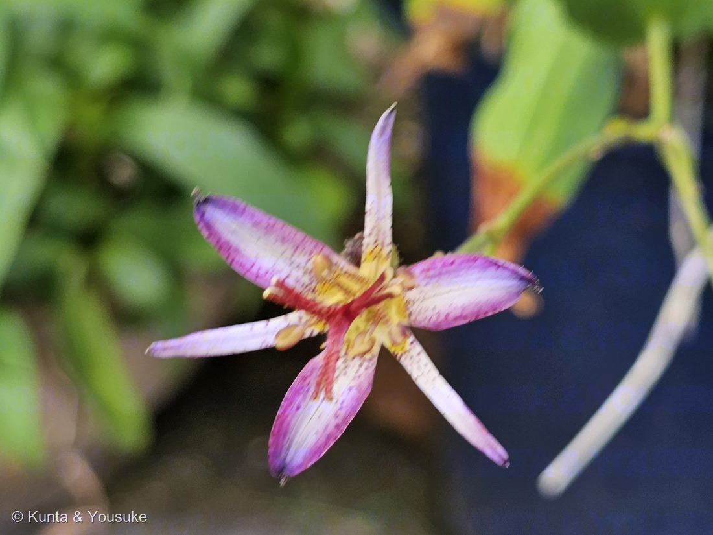
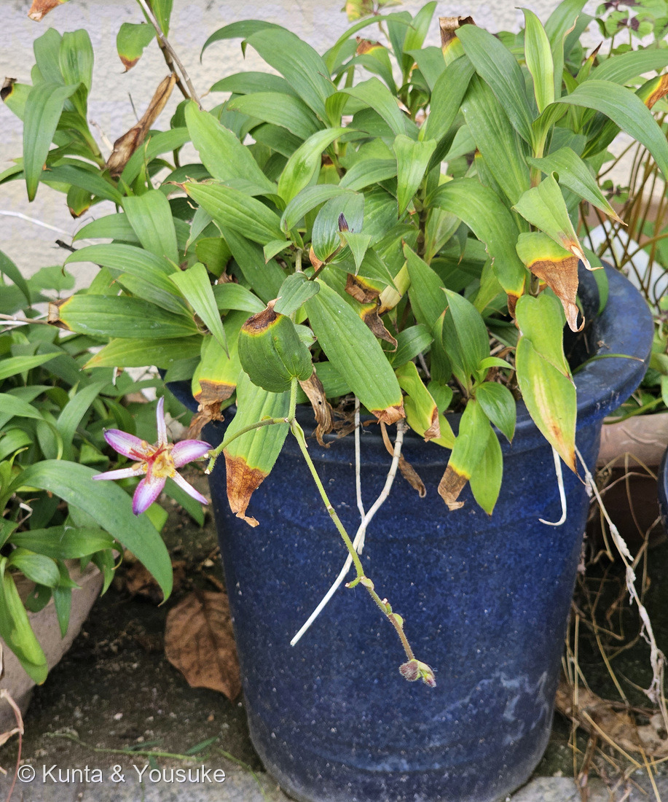
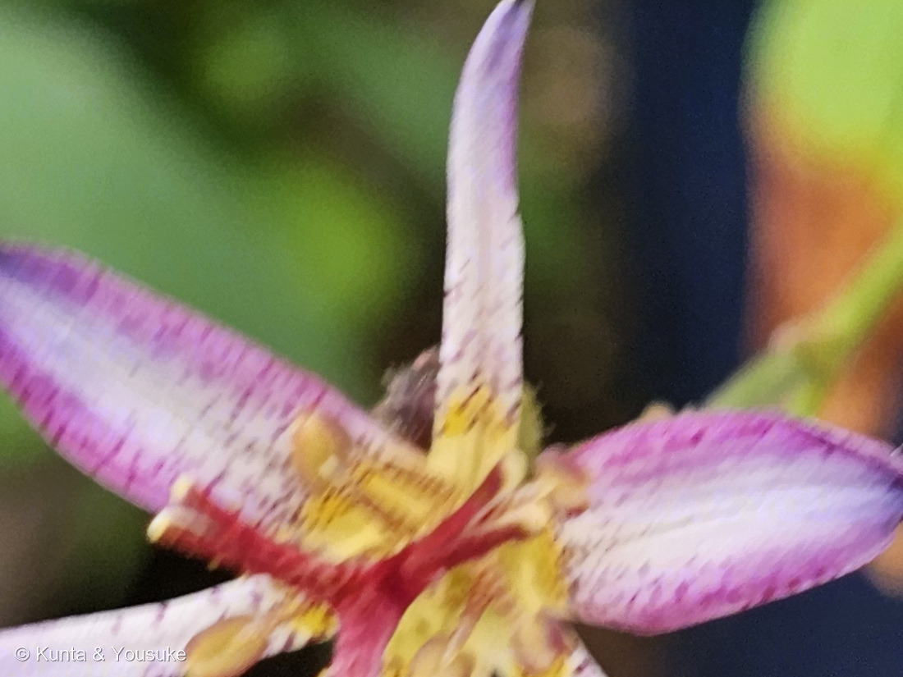
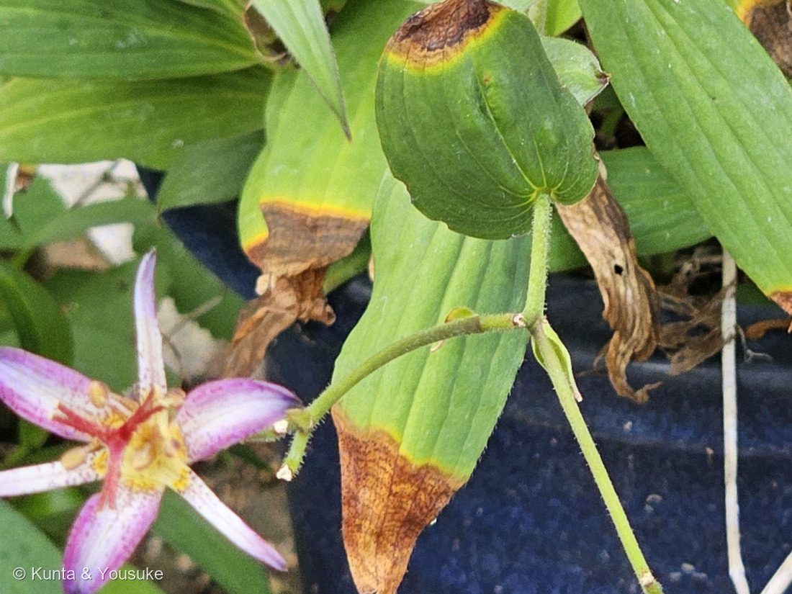
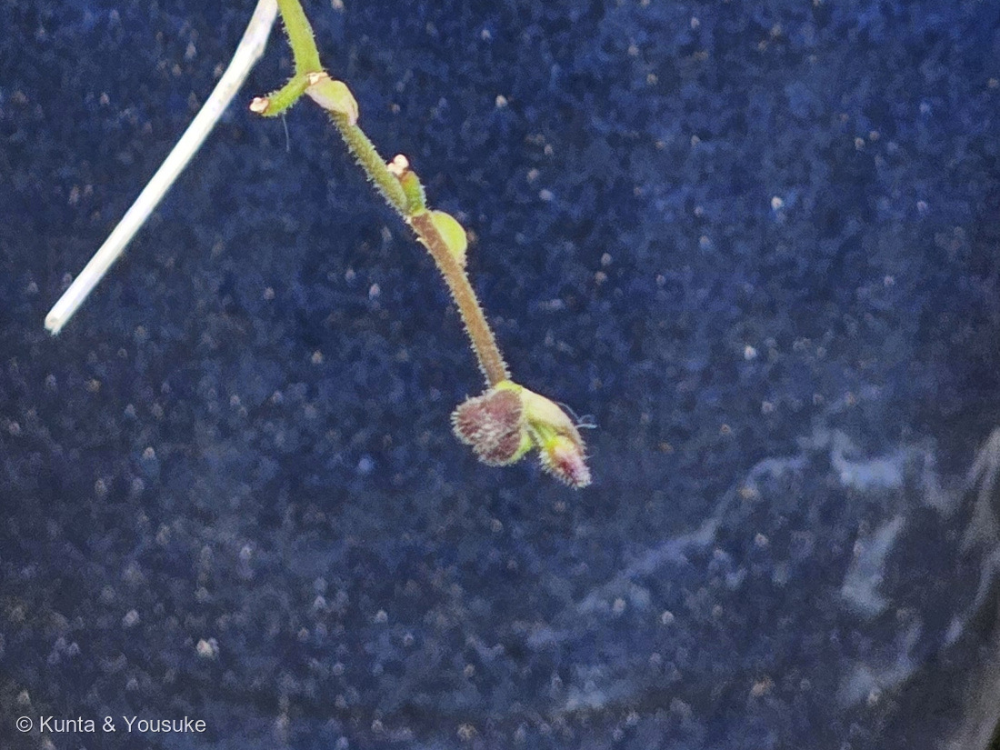

地図を読み込んでいるよ…
🔍 写真も地図も、押しているあいだ拡大して見られるよ（スマホは指を置いてすこし待ってね）。
🌍 の地図＝この子がもともと自生している場所を緑に。親になった2種のふるさとだよ。ホトトギスは日本固有種で、北海道の西南部・本州（関東以西）・四国・九州。タイワンホトトギスは台湾と、日本では西表島だけ。⚠この鉢の子は園芸の交配品と思われるので、この緑は「この鉢の子のふるさと」ではなく「親たちのふるさと」だよ。
⚠⚠日本の緑は、ほんとうよりずっと広く見えているよ＝ホトトギスがいるのは、北海道は西南部だけ、本州も関東以西だけなのに、地図は県までしか塗れないから（⭐276 マサキの北海道と同じことが起きているよ）。⭐⭐⭐台湾を塗ったのは、もう一人の親のため＝タイワンホトトギスの種小名 formosana は、その台湾（フォルモサ）のことだよ＝⭐261 タカサゴユリと同じく、台湾から来たユリ科の子だね。⚠西表島は沖縄県の一部として塗られているよ。⭐⭐この属ぜんたいで見ると、ふるさとはヒマラヤから東アジア（中国・日本・フィリピン・台湾）で、約20種＝⭐日本に10種あまりいて、その多くが日本固有種だよ。
⚠ 地図は国（日本と中国だけ県・省）までしか塗れないから、ほんとうの分布より広く見えていることがあるよ。地図はだいたいの場所。正確なところは、上の文を見てね。
ホトトギスのなかま（杜鵑草の仲間）
Tricyrtis sp.（ホトトギス属）
別名 ユテンソウ（油点草）· 英名 toad lily（ヒキガエルのユリ）
ユリ科 · Liliaceae（ホトトギス属 Tricyrtis · ユリ目 Liliales）── ⭐ユリ科は、この子を入れて図鑑に5人（054 カノコユリ・065 オニユリ・197 カタクリ・261 タカサゴユリ）
燻太さんの言葉「一瞬でホトトギスの仲間だってわかったけど、いわゆる普通のホトトギスは花被片の幅がもう少し広くて、色も白と紫だよね。この子はもっと華奢で華やか。柱頭の赤色も花の豪華さに拍車をかけているね。」── ⭐⭐⭐その「華奢で華やか」の一言に、3つの形質が入っていたよ
⭐⭐⭐ 名前と学名の由来 ── 「三つのこぶ」と、鳥の胸
- ⭐⭐⭐⭐⭐属名の Tricyrtis は、ギリシャ語の tri（3つ）＋ kyrtos（こぶ・ふくらみ）。──外花被片3枚の基部が、袋のようにふくらんでいることから来ているんだ。⭐そのふくらみが蜜をためる部屋になっている。
- ⭐種小名の hirta（ホトトギス）は「短い剛毛のある」。⭐この子の茎とつぼみの、あの毛のことだね（写真④⑤）。
- ⭐種小名の formosana（タイワンホトトギス）は「台湾（フォルモサ）の」。
- ⭐⭐和名の「ホトトギス（杜鵑草）」は、花の紫の斑点を、鳥のホトトギス（杜鵑）の胸の斑点に見立てたもの。⭐植物のほうが、鳥から名前をもらっているんだ。
- ⭐別名の「ユテンソウ（油点草）」も、やっぱり点の名前。
- ⭐⭐⭐英語では toad lily（ヒキガエルのユリ）。──斑点だけじゃなくて、花の根もとのいぼみたいなふくらみも「カエルっぽい」と見られている。⭐⭐おなじ一つのふくらみを、ラテン語は「こぶ」と呼び、英語は「カエル」と呼び、日本語は見ないで「点」だけを見た。⚠この読みくらべは、ぼくの整理だよ。
⭐⭐ この植物のこと
- ユリ科ホトトギス属の多年草。⭐属ぜんたいでは約20種あって、ヒマラヤから東アジア（中国・日本・フィリピン・台湾）に分かれてすんでいる。
- ⭐⭐そのうち日本には10種あまりがいて、多くが日本固有種。──ホトトギス T. hirta も、おまけのヤマジノホトトギスも、日本にしかいない子だよ。
- すみかは林のふち。⭐日かげか半日かげで、しめった肥えた土を好む。⭐だから鉢でも、日なたにどんと置くのではなく、木かげのような場所が合っている。
- ⭐⭐⭐花被片は6枚が2輪。──外側の3枚は基部に蜜をためる袋をもち、内側の3枚は背に稜（すじ）がある。⭐同じ「花びら」に見えて、役割がちがうんだ。
- おしべは6本。花糸はすこし平たくて、根もとで短い筒になる。子房は3室。
- ⭐花期は8〜10月。⭐秋の花だよ。
⭐⭐⭐⭐⭐ 同定について ── 「決めきれない」のではなく、決められない相手
⭐⭐⭐この回は、そこがいちばん面白かった。──属はすぐ決まったのに、種は決めないほうが正直だった、という回だよ。
⭐⭐⭐ 燻太さんが、現場で見たこと
⭐⭐燻太さんの言葉。「一瞬でホトトギスの仲間だってわかったけど、いわゆる普通のホトトギスは花被片の幅がもう少し広くて、色も白と紫だよね。この子はもっと華奢で華やか。」
⭐⭐⭐これは、そのまま出典と合っている。──日本語版Wikipediaはホトトギスの花被片を「長さ約25ミリメートル」「斜め上向きに開き」「内側には白色地に紫色の斑点」とする。⭐三河の植物観察も「平開せず、斜めに開く」。⚠この鉢の子は、もっと細く、もっと水平で、縁と先が濃い紅紫。⭐⭐燻太さんの「華奢で華やか」は、幅と、ひらきかたと、色の3つを、いっぺんに言い当てていたんだ。
⭐⭐ 属は、迷わなかった
- 花被片が6枚で、紅紫の斑点がある。
- ⭐⭐太い花柱が3つに裂け、その先がさらに2つに裂ける。──この形は、ほかの科では見ない。
- ⭐花被片の基部に橙色の斑紋がある（写真③）。
- 葉の基部が茎を抱く（写真④）。
⚠⚠ でも、種は混ざっていた
⭐ホトトギス T. hirta 寄りの4つ
- ①茎とつぼみに毛が密生（写真④⑤）＝⚠タイワンは「無毛かわずかに毛がある」
- ②花被片の基部の橙色の斑紋がはっきり（写真③）＝⚠タイワンは「やや不明瞭」
- ③花柱・花糸に斑点（写真③）
- ④葉が長楕円〜披針形（写真②④）＝⚠タイワンは倒披針形
⭐タイワンホトトギス T. formosana 寄りの4つ
- ⑤つぼみが紅紫（写真⑤）＝⚠三河は「ホトトギスは蕾が白色」を、ちがいのひとつに挙げている
- ⑥花被片の縁と先が濃い紅紫（写真①）＝タイワンは「縁が濃く」＝⚠ホトトギスは白地に斑点
- ⑦花被片が細く、水平近くまでひらく（写真①）＝⚠ホトトギスは「平開せず、斜めに開く」
- ⑧花が葉腋にも茎の先にもつく（写真②⑤）＝⚠ホトトギスは葉脇
⭐⭐⭐⭐ そして、出典のほうが先に答えを書いていた
- 三河の植物観察（タイワンホトトギス）＝「園芸栽培されているのはホトトギスとの交雑品も多い」。
- みんなの趣味の園芸＝「ホトトギスとタイワンホトトギスとの間に交配種がつくられており、これらも『ホトトギス』の名で流通」（「松風」などが代表例）。
- ⭐⭐⭐つまり、この子は「ぼくが調べきれなかった」のではなくて、種名という答えを、そもそも持っていない可能性が高い。⭐だから Tricyrtis sp.（ホトトギス属）で止めた。
- ⚠園芸品種名も決めない。──写真から品種を当てることはできないよ。
⭐⭐ 落とせた相手
- ヤマジノホトトギス（おまけの子）＝⚠花柱にも花糸にも斑点がなく、基部の橙色の斑紋もない。⭐写真③には、どちらもある。
- ヤマホトトギス＝⚠花被片が反り返る。⭐この子は反り返っていない。
- キバナノホトトギス・チャボホトトギスなど＝⚠花が黄色。
⭐⭐⭐ 花のかたち ── 二階建ての柱と、三つの蜜つぼ
⭐⭐燻太さんが「豪華さに拍車をかけている」と言った、あの赤い部分のこと。
- ⭐⭐⭐まんなかから立ちあがる太い柱は、花柱（めしべの柄）だよ。──それが3つに裂けて水平にひらき、さらにそれぞれの先が2つに裂けて垂れる。⭐だから、ぱっと見ると6本あるように見える。
- ⭐⭐その柱にも、斑点がちらばっている（写真③）。⭐花びらだけでなく、めしべにまで点があるんだ。
- ⭐その下に、黄色い葯が6つ。⭐花糸は根もとで短い筒になっている。
- ⭐⭐⭐そして、いちばん下。──外側の花被片3枚のつけ根のふくらみが、蜜をためる部屋。⭐属名 Tricyrtis＝「3つのこぶ」は、この部屋のことだった。
- ⚠⚠この形がどんな虫のためにできているのかは、ぼくは信じられる出典にたどりつけなかった。⏳だから宿題にした。──⭐「調べる」より「見に行く」ほうが早いかもしれないね。
出典：ホトトギスの学名 Tricyrtis hirta (Thunb.) Hook.・茎に上向きの毛が密生すること・葉が長さ8〜18cm、幅2〜5cmの長楕円〜披針形で基部が茎を抱くこと・花が葉脇につくこと・花被片6個が平開せず斜めに開くこと・花被片に紅紫〜青紫の斑点があり、花柱や柱頭、花糸や葯の上側にも斑点があること・花被片の基部に橙色の斑紋があること・花柱が太く柱頭が深く3裂し先端がさらに2裂して平らに開くこと・在来種（日本固有種）で北海道西南部、本州（関東以西）、四国、九州に分布すること・和名が花の斑点を野鳥ホトトギスの胸の模様に見立てたことに由来することは三河の植物観察「ホトトギス」。タイワンホトトギスの学名 Tricyrtis formosana Baker・茎が普通屈曲し無毛かわずかに毛があること・葉が倒披針形または狭い楕円状披針形〜倒卵形であること・茎頂または葉腋の集散花序にまばらに花をつけること・花被片が斜め上向きに開き青紫白色で縁が濃く濃い紫色の斑点があること・花被片の内面基部の橙色の斑紋がやや不明瞭であること・花期が9〜10月で分布が西表島と台湾であること・「園芸栽培されているのはホトトギスとの交雑品も多い」こと・ホトトギスとの相違が「全体に大きく、蕾が白色で、基部の膨らみが黒くならず、花序の枝分かれがない」ことであることは三河の植物観察「タイワンホトトギス」。種小名 hirta が「短い剛毛のある」の意味であること・和名「ホトトギス」が「杜鵑草」の意で花の紫色の斑点を鳥のホトトギスの胸の斑点に見立てたことによること・別名がユテンソウ（油点草）であること・花被片が6個で長さ約25mmあり斜め上向きに開き、内側は白色地に紫色の斑点が多く下部に黄色の斑点があること・花期が8〜10月であることは日本語版Wikipedia「ホトトギス（植物）」。ホトトギス属が約20種でヒマラヤから東アジア（中国・日本・フィリピン・台湾）に分布すること・英名が toad lily であること・花被片が2輪6枚で外輪は蜜を分泌する袋をもち内輪は背に稜をもつこと・おしべ6本の花糸がやや平たく短い筒をつくること・子房が3室であること・林のふちに生え日かげか半日かげと肥えたしめった土を好むこと・ユリ科 Calochortoideae 亜科に置かれることは英語版Wikipedia「Tricyrtis」。属名 Tricyrtis がギリシャ語の tri（3）＋ kyrtos（こぶ・ふくらみ）で、外花被片3枚の基部の袋状の蜜腺に由来すること・英名 toad lily がヒキガエルのような斑点と、いぼ状の袋になった基部に由来することはPlant Delights Nursery「A Guide to Tricyrtis」。日本で園芸に使われる主な種・「ホトトギスとタイワンホトトギスとの間に交配種がつくられており、これらも『ホトトギス』の名で流通」すること・「松風」などが代表例であること・開花期が8〜9月で草丈30〜100cmであることはみんなの趣味の園芸「ホトトギス」。おまけのヤマジノホトトギス（Tricyrtis affinis Makino・高さ30〜60cm・茎に下向きの毛が密生・葉は長さ8〜18cm、幅2〜5cmの長楕円形で基部は茎を抱き暗色の斑点模様がある・上部の葉脇に上向きに単生、ときに2〜3個・花被片は長さ1.5〜2cmで開出し白色に紅紫〜紫の斑点がまばら・花柱に斑点がなく先端が深く3裂して裂片の先がさらに2裂・花糸に斑点がない・花期8〜10月・山野の林内・在来種（日本固有種）で北海道西南部、本州、四国、九州）は三河の植物観察「ヤマジノホトトギス」。⭐「この株はホトトギスとタイワンホトトギスの形質が混ざっているので、種名を決めない」という判断と、①〜⑧のふり分け、そして「ラテン語はこぶ、英語はカエル、日本語は点だけを見た」という読みくらべは、ぼくの整理だよ。⚠送粉者については、信じられる出典にたどりつけなかったので書いていない。